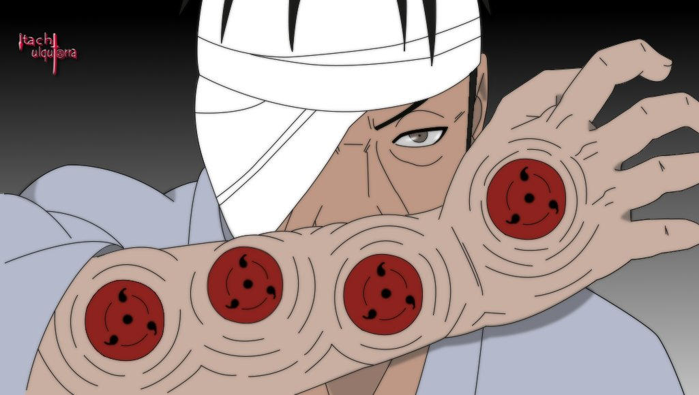
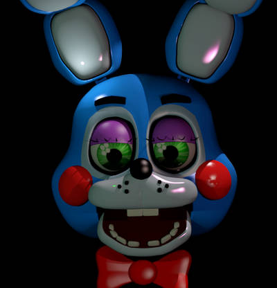
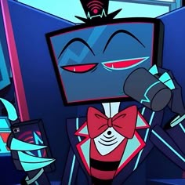

01 / CAMERA INPUT
CAMERA OFF
478 LANDMARK INPUT
Custom wearable electronics, live facial tracking, responsive mechanisms and character-specific behaviour.
Your camera is the input only. The tracker reads facial movement, normalises it into control signals, then drives a simulated LED character face on the right.
Video is processed locally in your browser. No microphone is requested.
Facial landmark inference runs on-device with MediaPipe. For best compatibility, use a Chromium-based browser. MediaPipe may send SDK performance and usage metrics to Google.
The tracking system is only the input layer. The same control signals can drive screens, physical eyes, eyelids, jaws and other mechanisms built around the character.

Character/image © respective rights holders. Used here as visual reference.
The Sharingan embedded along the arm could open and close independently, with the mechanism recreating the progressive eye-closing effect as Izanagi is used.

Character/image © respective rights holders. Used here as visual reference.
Eyes, blinking, brows, jaws and other facial mechanisms can respond directly to the performer inside the head.
Character/image © respective rights holders. Used here as visual reference.
A self-contained additional eye that follows the wearer’s gaze and blinks with them, styled around the character’s iris, pupil and surrounding anatomy.

Character/image © respective rights holders. Used here as visual reference.
LED, LCD and television-style character faces can use the same live facial tracking demonstrated above, with visuals and behaviour built around the character.
Character/image © respective rights holders. Used here as visual reference.
Several physical eyes can share the wearer’s gaze and blinking, or use offset movement and timing to create character-specific behaviour.
Character/image © respective rights holders. Used here as visual reference.
Moving jaws, extra mouths, expressive lenses, creature features and other costume elements can be tied directly to performer input.
Each build can interpret the wearer differently. Expression signals can be literal, exaggerated, softened or remapped to fit the character.
Eyelids, shutters or character eyes can follow the wearer.
Eye direction can drive displays or physical moving eyes.
Brows, eyelids and other features can remain independently controllable.
Opening, shape and expression can drive jaws, mouths or animated faces.
The response is designed around the character rather than a generic preset.
Tracking and movement ranges are tuned around the actual wearer.
Reference material, movement, proportions, physical constraints, fitting requirements and the visual rules of the character.
Decide how the performer controls the character: literal where useful, stylised where that creates a stronger effect.
Structure, displays or mechanisms, camera placement, electronics, power, mounting and serviceability are designed as one wearable system.
Final fit and per-user calibration. Subtle and exaggerated inputs are tuned so the physical character responds correctly.
I take on bespoke cosplay and character builds where tracking, electronics or mechanisms can make something normally static actually perform.
DISCUSS A BUILD ON DISCORD ↗